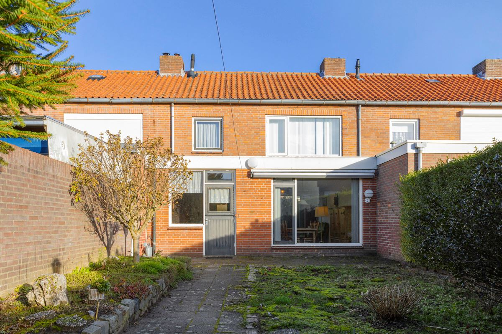

De verrassend diepe achtertuin voegt hier weer een speciale dimensie
aan toe. Ook hier vind je alle ruimte om met een eigen indeling en
vormgeving aan de slag te gaan. Met het heerlijke idee dat de ligging
op het zuidwesten voor behoorlijk wat zonuren zorgt. Hierdoor kun je
nog tot laat van je eigen buiten blijven genieten.
De ligging aan deze rustige woonstraat in een fijne gezinswijk maakt
het woonplezier compleet. Zeker omdat je ook nog eens dicht bij
allerlei voorzieningen woont. Zo hoef je voor station Oss-West de
straat maar uit de lopen. En je hebt snelle routes naar twee
winkelcentra, het stadshart en de opritten van de snelweg.
Pluspunten.
+ Parkeren langs woonstraat.
+ Hal bevat meterkast, trap en toiletruimte. Plavuizenvloer in hal
gaat verder in keuken.
+ De uitgebouwde woonkamer heeft een licht doorzon karakter door grote
ramen aan voor- en achterzijde.
+ In aparte keuken staat keukenblok natuurstenen werkblad 4-pits
gaskookplaat, afzuigkap, oven, koelkast en vaatwasser. Naast het
keukenblok is plaats voor de wasmachine. Buitendeur naar achtertuin.
+ Diepe achtertuin op zonzijde is ingericht met verharde terrassen,
gazon en border. Boven terras bij woning is zonneluifel gemonteerd.
Achterin staat een grote stenen berging. Poort geeft een directe
achterom.
+ Drie slaapkamers op eerste verdieping hebben prima afmetingen en een
fijne lichtinval.
+ Badkamer is voorzien van raam, inloopdouche en wastafel.
+ Vlizotrap naar bergzolder.
Bijzonderheden
+ Energielabel D.
+ HR-combiketel.
+ Woonkamer dubbel glas.
+ Parkeergelegenheid direct voor de deur.
+ Gelegen op korte afstand van winkels, scholen en een station.
Aanvaarding
In nader overleg.
